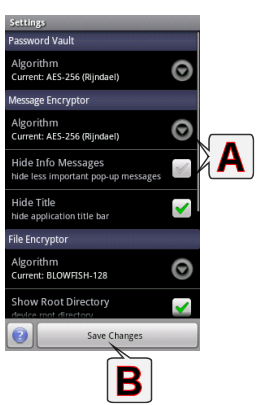

Settings

A - Available Settings
- PasswordVault
- Algorithm: encryption algorithm for the Password Vault
- Password List Font Size: text size in the password (item) list section (size of the password name and password)
- Lock Screen: lock Password Vault screen when the application goes background (when application is "minimized")
- Show Bottom Menu Bar: show options menu on the bottom of the "folders screen" by default
- Message Encryptor
- Algorithm: encryption algorithm for the Message Encryptor
- Hide Info Messages: hide less important pop-up messages (like: message was copied to...)
- File Encryptor
- Algorithm: encryption algorithm for the File Encryptor
- Show Root directory: show root directory of this device ("root shortcut" in the File Encryptor)
- Wipe Source After Encryption: delete (with wiping) source files automatically after encryption
- Common Settings
- Import/Export Path: application import/export directory
- Show Sub-Applications Exit Dialog: confirm return to the main menu (on back button click only, direct "Main Menu" buttons will not be affected)
- Allow Unicode Passwords: Only the ASCII 32-126 characters are allowed for passwords by default ( => compatibility - almost every device/system has sufficient keyboard). If you allow "Unicode Passwords", you can use every character that your keyboard allows.
- Disable Native Code Algorithms: use platform independent version of code only (use only when native code causes problems with this device)
B - Save Changes
- save changes and return to the main menu